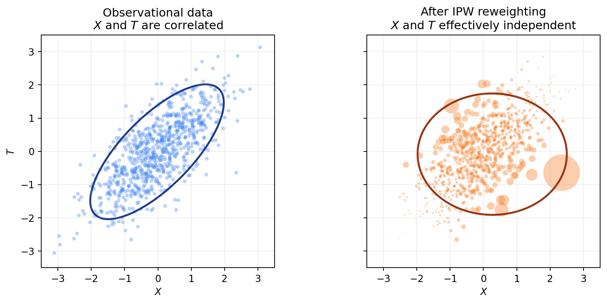

What this library does
In standard supervised learning, you train a model on (X, Y) and predict Y for new X. Causal inference adds one more variable, the treatment T. The question changes from “what is Y for this unit?” to “what would Y be for this unit if we set its treatment to T=t?”
skcausal answers that question for any kind of treatment:
- binary (treated vs. control),
- categorical (drug A, B, or C),
- continuous (a dose, a price, a budget).
Most causal-inference textbooks restrict the discussion to binary treatments and a single number, the Average Treatment Effect (ATE). In skcausal we take a more general view and target the entire dose–response curve, also called the Average Response Function (ARF): for each treatment level t, the average outcome we would see if everyone received t.
The setup
You have a dataset with covariates X, a treatment T, and an outcome Y:
| X1 | X2 | T | Y |
|---|---|---|---|
| 2.0 | 1.0 | 0 | 10 |
| 2.5 | 0.2 | 1 | 5 |
| 1.0 | 0.5 | 2 | 15 |
The catch: each row tells you Y only under the treatment that unit actually received. The columns we really want — “what would Y be for this unit if we had set T=0? What about T=1? T=2?” — are missing:
| X1 | X2 | T | Y | Y if T=0 | Y if T=1 | Y if T=2 |
|---|---|---|---|---|---|---|
| 2.0 | 1.0 | 0 | 10 | ? | ? | ? |
| 2.5 | 0.2 | 1 | 5 | ? | ? | ? |
| 1.0 | 0.5 | 2 | 15 | ? | ? | ? |
For continuous treatments there is one such hypothetical column for every possible value of t, so the table effectively has infinitely many missing columns.
The first thing we can fill in is the cell that matches the treatment we actually observed. If unit 1 received T=0 and we observed Y=10, then under treatment T=0 that unit’s outcome is 10. This is the consistency assumption:
| X1 | X2 | T | Y | Y if T=0 | Y if T=1 | Y if T=2 |
|---|---|---|---|---|---|---|
| 2.0 | 1.0 | 0 | 10 | 10 | ? | ? |
| 2.5 | 0.2 | 1 | 5 | ? | 5 | ? |
| 1.0 | 0.5 | 2 | 15 | ? | ? | 15 |
Our goal is the average of one full hypothetical column: if we set treatment t for everyone, what is the average outcome? We call this \(\mu(t)\).
NoteTheory: potential outcomes and the target estimand
Let \(X\), \(T\), \(Y\) represent the covariates, treatment, and outcome, sampled from a joint density \(P(X,T,Y)\). We have a dataset \(\mathcal{D} = \{(x_i, t_i, y_i)\}_{i=1}^n\) of \(n\) independent and identically distributed samples from \(P\). The random variable \(Y^*(t)\) is the potential outcome that would be observed if treatment were set to \(t\).
Consistency. The observed outcome equals the potential outcome at the observed treatment: \(Y = Y^*(T)\).
The quantity of interest is the Average Response Function (ARF):
\[ \mu(t) = \mathbb{E}_P[Y^*(t)] \]
If we could see the full potential-outcome columns, \(\mu(t)\) would just be the SQL query
SELECT AVG("Y*(t)") FROM databut we never observe more than one cell per row.
Why we cannot just train a model on (T, Y)
A first reflex from supervised learning would be: train a model \(\hat{y} = f(t)\) on the observed (t, y) pairs and call it done.
That model gives you the average \(Y\) among units who actually received \(t\). That is not the same as the average \(Y\) you would see if you assigned \(t\) to everyone, because the units who received different t values do not look the same on X. This is the same trap as training on biased data: a wealth-prediction model fit only on customers who opted into a premium plan does not generalize to all customers, because opting in correlates with income.
This problem is called confounding bias: the covariates X influence both which treatment a unit receives and what outcome they would have, so each treatment group is a non-representative slice of the population.
To remove the bias, we need two more assumptions:
- Unconfoundedness — once we condition on
X, treatment is “as if random”.Xcaptures everything that drives both treatment choice and outcome. - Positivity (overlap) — every unit has a non-zero chance of receiving every treatment level given its covariates. Without this, some regions of
X-space contain no information at all about a given treatment level, and our estimators break down.
NoteTheory: assumptions and identification
Unconfoundedness. The potential outcomes are independent of treatment given covariates: \(Y^*(t) \perp T \mid X\) for all \(t\).
Positivity. \(P(T=t \mid X=x) > 0\) for all \(t\) and all \(x\) in the support of \(X\).
The data factorizes as \(P(X,T,Y) = P(Y\mid X,T)\,P(T\mid X)\,P(X)\), and the term \(P(T\mid X)\) is what makes treatment groups non-representative.
The naive conditional mean averages over the wrong distribution:
\[ \mathbb{E}_P[Y \mid T=t] = \int_{\mathcal{X}} \mathbb{E}_P[Y \mid X=x, T=t]\, P(x \mid T=t)\, dx. \]
Under consistency, unconfoundedness, and positivity, the causal response function is identified as:
\[ \mu(t) = \mathbb{E}_P[Y^*(t)] = \int_{\mathcal{X}} \mathbb{E}_P[Y \mid X=x, T=t]\, P(x)\, dx. \]
The difference between \(P(x \mid T=t)\) (covariate distribution among units who received \(t\)) and \(P(x)\) (the full population) is exactly the confounding bias.
Three ways to fix the bias
skcausal implements three families of estimators. Each one is built around a model an ML practitioner already knows: a regressor, a classifier (or density estimator), or both.
1. Direct method — train an outcome regressor
Train a regression model \(\hat{f}(X, T)\) that takes covariates and treatment as input. To estimate \(\mu(t)\), hold \(T = t\) constant for every unit, predict, and average:
\[ \hat{\mu}(t) \approx \frac{1}{n} \sum_{i=1}^n \hat{f}(x_i, t) \]
In ML terms: this is a counterfactual prediction. For each unit, ask the model “what would you predict if I overrode this unit’s treatment to \(t\)?” and take the mean.
When it works. When the outcome regressor is a good fit across the whole space — that is, it captures \(\mathbb{E}[Y \mid X, T]\) well, including in regions where the original treatment was rare.
NoteTheory: why averaging predictions identifies \(\mu(t)\)
If \(\hat{f}(X,T)\) is a consistent estimator of \(\mathbb{E}[Y \mid X,T]\):
\[ \mathbb{E}_P[\hat{f}(X,t)] \approx \mathbb{E}_P[\mathbb{E}[Y\mid X,t]] = \mathbb{E}_P[\mathbb{E}[Y^*(t)\mid X]] = \mu(t) \]
The first equality uses the regressor’s consistency, the second uses unconfoundedness together with consistency, and the outer expectation marginalises over \(P(x)\).
In skcausal, the direct method is DirectRegressor. It concatenates the treatment column to the covariates and hands the result to any sklearn-style regressor, so the same class handles binary, categorical, and continuous treatments:
import numpy as np
import polars as pl
from sklearn.linear_model import LinearRegression
from skcausal.causal_estimators import DirectRegressor
direct = DirectRegressor(outcome_regressor=LinearRegression())
direct.fit(X, t, y)
mu_hat = direct.predict(t)2. Inverse probability weighting — reweight the data
The second approach does not touch the outcome at all. Instead, it fixes the dataset itself. The idea: train a model that predicts treatment from covariates (\(P(T \mid X)\)), then upweight units that are unusual given their covariates and downweight units that are over-represented. After reweighting, the sample looks like one drawn from a randomized experiment, where X and T are independent.
Intuition: a unit that is “surprising” given its covariates (low \(P(T \mid X)\)) carries a lot of information about what happens at that treatment level for under-represented X, so it gets a large weight. A unit that is “expected” gets a small weight. To estimate \(\mu(t)\), take a weighted average of Y over the units with T=t.
There are two common flavours of weight: the raw inverse propensity \(1/P(T \mid X)\) and the stabilized version \(P(T)/P(T \mid X)\), which targets the same quantity but tends to be lower-variance.
When it works. When the treatment-given-covariates model is good. This is independent of how well you can model the outcome — a useful property, since the two models can fail in different ways.
Caveat — positivity again. If some unit has \(P(T = t \mid X) \approx 0\) for the treatment it received, the inverse weight blows up. Without overlap, IPW is unstable.
NoteTheory: deriving the IPW estimator
The naive conditional mean averages over \(P(x \mid T=t)\), but we want the integral against \(P(x)\). Find \(w(x,t)\) such that:
\[ \int_{\mathcal{X}} \mathbb{E}_P[Y \mid X=x, T=t]\, P(x \mid T=t)\, w(x,t)\, dx = \int_{\mathcal{X}} \mathbb{E}_P[Y \mid X=x, T=t]\, P(x)\, dx. \]
Solving:
\[ w(X,T) = \frac{P(X)}{P(X \mid T)} = \frac{P(X)}{P(X,T)/P(T)} = \frac{P(T)}{P(X,T)/P(X)} = \frac{P(T)}{P(T \mid X)}. \]
This is the stabilized propensity weight. The corresponding finite-sample estimator restricts to units with \(T=t\) and reweights:
\[ \hat{\mu}(t) = \frac{1}{n_t}\sum_{i : t_i = t} w(x_i,t)\, y_i,\quad n_t = \sum_{i=1}^n \mathbb{1}\{t_i = t\}. \]
An equivalent estimator averages over all samples and uses an indicator to zero out non-matching units. Taking the expectation under the joint \(P(X,T,Y)\) and applying the tower property:
\[ \begin{aligned} \mathbb{E}_P\!\left[\frac{\mathbb{1}\{T=t\}}{P(T=t\mid X)}\, Y\right] &= \int_{\mathcal{X}} \,\mathbb{E}_P[Y \mid x, T=t]\, w(x,t)\, P(T=t\mid x)\, P(x)\, dx \\ &= \int_{\mathcal{X}} \,\mathbb{E}_P[Y \mid x, T=t]\, w(x,t)\, P(T=t,X=x)\, dx \\ &= \int_{\mathcal{X}} \mathbb{E}_P[Y \mid x, T=t]\, P(x)\, dx \\ &= \mu(t). \end{aligned} \]
Here the weighting function is the inverse propensity score \(w(X,T) = 1/P(T \mid X)\), and the finite-sample estimator is:
\[ \hat{\mu}(t) = \frac{1}{n} \sum_{i=1}^n \frac{\mathbb{1}\{t_i = t\}}{\hat{P}(t \mid x_i)}\, y_i. \]
The two estimators are closely related: the first reweights \(P(X \mid T=t)\) to match \(P(X)\), while the second reweights the joint \(P(X,T)\) to match \(P(X)P(T)\). Both target \(\mu(t)\).
The “classifier” we need here is more general than a standard sklearn classifier — for continuous treatments, we need a conditional density \(P(T \mid X)\), not class probabilities. skcausal provides several density estimators for this:
from skcausal.utils.lookup import all_density_estimators
all_density_estimators(as_dataframe=True)| name | object | |
|---|---|---|
| 0 | CompositeFactorizedDensityEstimator | <class 'skcausal.density.compose.CompositeFact... |
| 1 | IntegratedMarginalAndConditional | <class 'skcausal.density.stabilized_from_condi... |
| 2 | KernelMarginalAndConditional | <class 'skcausal.density.stabilized_from_condi... |
| 3 | NaiveDensityEstimator | <class 'skcausal.density.naive.NaiveDensityEst... |
| 4 | OptunaSearchDensityEstimator | <class 'skcausal.density.optuna.OptunaSearchDe... |
| 5 | PermutationWeighting | <class 'skcausal.density.permutation_weighting... |
| 6 | Pipeline | <class 'skcausal.density.pipeline.Pipeline'> |
| 7 | SklearnCategoricalDensity | <class 'skcausal.density.sklearn.SklearnCatego... |
| 8 | SkproDensityEstimator | <class 'skcausal.density.skpro.SkproDensityEst... |
For binary or multi-categorical treatments, IPW is implemented in CategoricalInversePropensityWeighting. With the default target_density_kind="stabilized" it uses \(P(T)/P(T \mid X)\); switching to "conditional" recovers the raw \(1/P(T \mid X)\):
import polars as pl
from sklearn.linear_model import LogisticRegression
from skcausal.causal_estimators import CategoricalInversePropensityWeighting
from skcausal.density.sklearn import SklearnCategoricalDensity
ipw = CategoricalInversePropensityWeighting(
density_estimator=SklearnCategoricalDensity(LogisticRegression(max_iter=1000)),
)
ipw.fit(X, t, y)
ipw.predict(t)For continuous treatments, the IPW correction is folded into the doubly robust estimator described next.
3. Doubly robust — combine both
The direct method needs a good outcome model. IPW needs a good treatment model. They rely on different assumptions to be consistent — so why not use both, and let one correct the other?
The recipe:
- Start with the direct method’s prediction \(\hat{\mu}(t)\).
- Use IPW to estimate the average error of that prediction at level \(t\).
- Subtract the estimated error.
For continuous treatments this also gives us something more useful than a single number per t: a per-unit “pseudo-outcome” that targets \(Y^*(t_i)\) for each unit’s own treatment. We can then fit any regression on the (t_i, pseudo-outcome_i) pairs to recover a smooth dose–response curve. This is the pseudo-outcome regression approach of Kennedy et al. (2017).
When it works. When at least one of the two component models is consistent — robustness here comes from the redundancy between the two models, not from each one being perfect.
NoteTheory: bias correction and the doubly robust formula
Define the unit-wise error of the direct method \(\delta(X, T) = \hat{\mu}(X, T) - \mathbb{E}[Y \mid X, T]\). Its expectation is the bias of the direct method:
\[ \begin{aligned} \Delta(T) = \hat{\mu}(T) - \mu(T) &= \hat{\mu}(T) - \mathbb{E}[Y^*(T) \mid X] \\ &= \hat{\mu}(T) - \mathbb{E}[\mathbb{E}[Y \mid X, T]\mid X] \\ &= \mathbb{E}[\hat{\mu}(T) - \mathbb{E}[Y \mid X, T]\mid X] \\ &= \int_{\mathcal{X}} (\hat{\mu}(T) - \mathbb{E}[Y \mid x, T])\, P(x)\, dx \\ &= \int_{\mathcal{X}} \delta(x, T)\, P(x)\, dx. \end{aligned} \]
Estimating \(\Delta(t)\) is itself an expectation under \(P(x)\) — exactly the problem IPW solves. Apply the same reweighting trick:
\[ \Delta(t) = \int_{\mathcal{X}} \delta(x, t)\, P(x)\, dx = \int_{\mathcal{X}} \delta(x, t)\, P(x \mid T=t)\, w(x,t)\, dx, \]
with finite-sample form:
\[ \hat{\Delta}(t) = \frac{1}{n_t} \sum_{i : t_i = t} w(x_i,t)\, \delta(x_i,t_i). \]
Plugging in, the doubly robust estimator is:
\[ \hat{\mu}_{DR}(t) = \hat{\mu}(t) - \hat{\Delta}(t) = \hat{\mu}(t) - \frac{1}{n_t} \sum_{i : t_i = t} w(x_i,t)\, \delta(x_i, t_i). \]
For continuous or multi-dimensional t, evaluate \(\hat{\mu}_{DR}(t_i)\) at each observed unit and treat the resulting pairs \((t_i, \hat{\mu}_{DR}(t_i))\) as a pseudo-outcome dataset. Fitting a regression on those pairs yields a smooth ARF.
In skcausal, the pseudo-outcome regression estimator is DoublyRobustPseudoOutcome. It handles both continuous and categorical treatments and returns the smoothed ARF over any requested treatment grid:
import numpy as np
import polars as pl
from sklearn.linear_model import LinearRegression
from sklearn.ensemble import RandomForestClassifier
from skcausal.causal_estimators import DoublyRobustPseudoOutcome
from skcausal.density.permutation_weighting import PermutationWeighting
density = PermutationWeighting(
classifier=RandomForestClassifier(
n_estimators=200,
min_samples_leaf=5,
random_state=0,
),
random_state=0,
)
dr = DoublyRobustPseudoOutcome(
density_estimator=density,
outcome_regressor=LinearRegression(),
pseudo_outcome_regressor=LinearRegression(),
random_state=0,
)
dr.fit(X, t, y)
mu_hat = dr.predict(t)For binary or multi-categorical treatments, CategoricalDoublyRobust is the analogous estimator that combines a per-level outcome regressor with a stabilized propensity correction and returns one estimate per observed level.